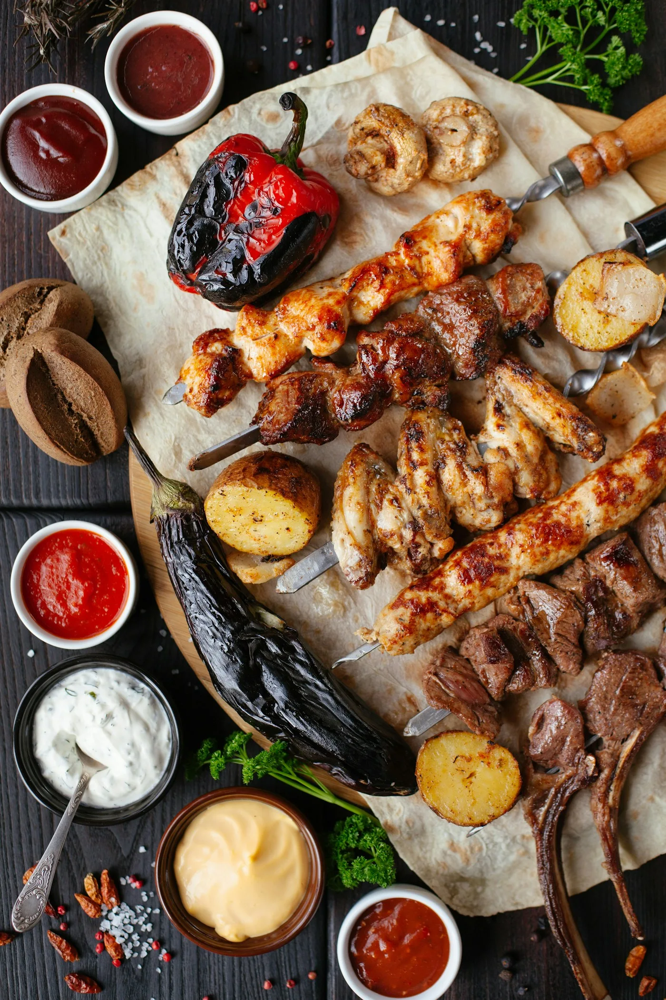

Quanto de carne por pessoa no churrasco
Saiba quanto comprar de carne, linguiça, frango, pão de alho, carvão, cerveja e refrigerante por pessoa no churrasco, com tabela e calculadora gratuita.

Não existe norma oficial, mas a conta que a maioria dos churrasqueiros usa é de 400 g a 500 g de carnes por adulto em um churrasco de cerca de 4 horas com acompanhamentos. Crianças comem aproximadamente metade. Se a carne for praticamente o único alimento ou o evento for longo, suba para 600 g.
Quer o cálculo pronto, com lista de compras? Use a calculadora de churrasco: informe adultos, crianças e duração e ela calcula carnes, carvão, bebidas e acompanhamentos.
Tabela de quantidade por pessoa
| Item | Por adulto | Por criança |
|---|---|---|
| Carnes no total | 400–500 g | 200–250 g |
| Carne bovina (picanha, fraldinha, maminha) | 250 g | 120 g |
| Linguiça | 100 g | 50 g |
| Frango (coxinha da asa, coração) | 100 g | 50 g |
| Pão de alho | 1 a 2 unidades | 1 unidade |
| Queijo coalho | 1 espeto | 1 espeto |
| Farofa | 50 g | 30 g |
| Arroz (cru) | 50 g | 30 g |
| Vinagrete | 60 g | 30 g |
| Cerveja | 1 a 1,5 litro | — |
| Refrigerante / suco | 600 ml | 500 ml |
| Água | 500 ml | 300 ml |
| Carvão | ≈ 1 kg para cada 1 kg de carne | |
| Gelo | 1 kg para cada 3 pessoas |
Como dividir os cortes
Uma boa mistura é 50% de carne bovina, 25% de linguiça e 25% de frango ou porco. Para um churrasco mais econômico, aumente a proporção de linguiça, frango e cortes como fraldinha, acém e costela. Para um churrasco especial, inclua picanha, ancho e cupim.
Ordem de servir
- Começo: linguiça, pão de alho, queijo coalho e coraçãozinho — ficam prontos rápido e seguram a fome.
- Meio: asinhas, fraldinha e maminha.
- Final: cortes nobres como picanha, que merecem ser servidos com calma.
Dicas de churrasqueiro
- Sal grosso só na hora de ir para a grelha; sal fino ou parrilla nos cortes finos.
- Brasa pronta é brasa coberta de cinza branca, sem chama alta.
- Deixe a carne descansar 5 minutos antes de fatiar.
- Frango e linguiça precisam estar bem passados: 74 °C e 71 °C no centro, respectivamente.
- Compre 10% a mais para imprevistos — sobras viram farofa, sanduíche ou arroz carreteiro.
Conteúdo informativo, revisado pela equipe editorial do Clube da Receita. Prazos e temperaturas são referências gerais; siga sempre as orientações do rótulo e, em caso de dúvida sobre segurança dos alimentos, descarte.
← Voltar ao caderno